One of the best turn-based strategy game, Heroes of Might And Magic reveals a world with treasures, mines,
all kinds of creatures, castles and, of course, heroes which will fight for our cause if we have the gold to pay them.
Instead of reading a quick review, let's play a scenario and discover this world along the way.
I chose a small map, the objective being to eliminate all enemies. A player must own at least one city. So, in order to win, we'll have to capture all enemy cities.
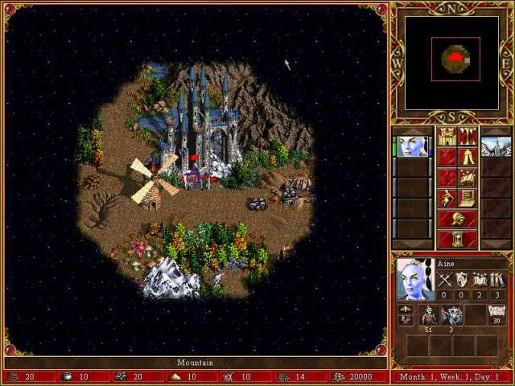
The wind blows and a nice music is playing. Our hero, Aine, is sitting at the city's gate, waiting for orders.
We have some resources, listed at the bottom of the screen : wood, mercury, ore, sulfur, crystals, gems and gold.
These are necesary to build city improvements, buy creatures, hire heroes and others. Clicking twice on the city
(first time to select it) we enter it.
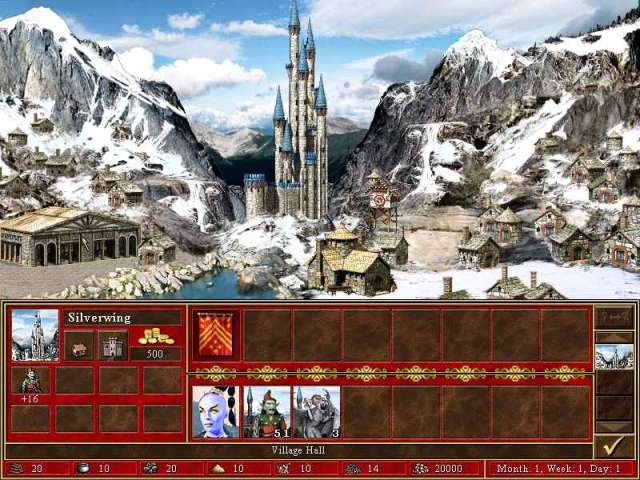
Hmm, a little empty. And poor too, it earns only 500 gold / day. From the Village Hall, we can improve this.
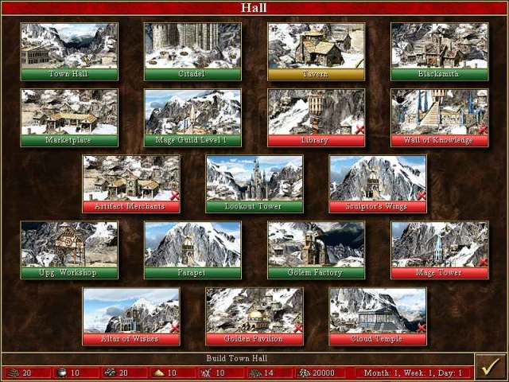
We start with the Town Hall, which costs 2500, and boosts our gold earnings to 1000 / day. We can build only one improvement per day, so that's it for now. From the Fort, we buy some Gremlins for our hero.
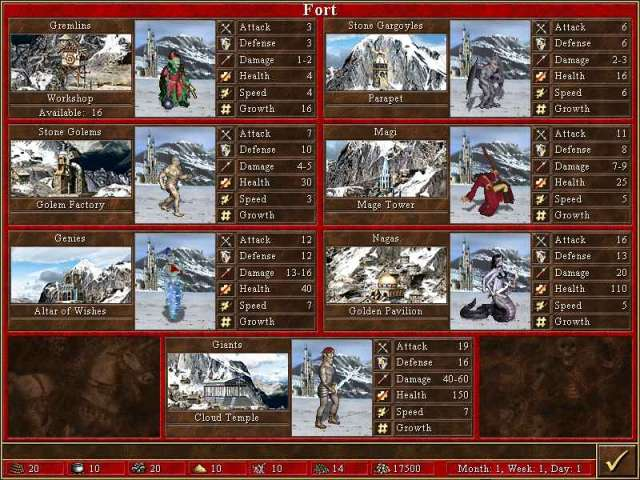
We'll be able to buy the other creatures when we have the necesary buildings.
Exploring the map with Aine, we gain control of an ore pit, which brings us 2 ore / day. We have a limited number
of moves with a hero per day. Soon Aine stops, on her way to a Sawmill, which will bring 2 wood / day.
To be more efficient, we hire another hero, Astral, from the Tavern located the city. I chose him because he has 30
spell points, which we'll use in combat to make spells (surprise, surprise!).
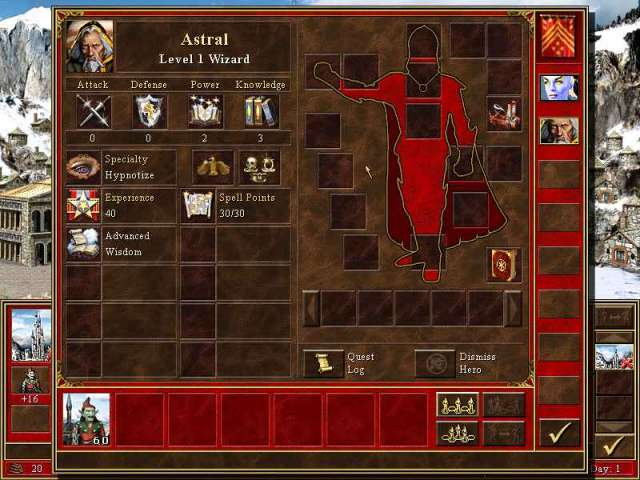
In the View screen, we can see Astral has 0 Attack and Defense Skill. But we have 3 Knowledge (we get 10 spell points / 1 Knowledge ) and 2 Spell Power, which makes our spells more effective. We also have Advanced Wisdom level, which enables Astral to learn spells from the higher levels of Mage Guild. We gain other skills and improve existing ones with experince, earned usually in combat. Outside, Astral joins Aine for a short time to transfer her his army (59 Gremlins), keeping only one. We'll have to fight soon for other resources. For now just end the turn, giving the enemy the right to move his heroes (if he dares :)
For the rest of the week, we explore the map, taking all what we can without fight, and build Mage Guild, Marketplace and Blacksmith, required for City Hall, which will earn 2000 gold / day.
In their adventures, heroes might find artifacts. These provides advantages (usually), such as aditional points for a Skill, luck or more moves. There is one special artifact, the Holy Grail, which is burried somewhere. We can find the place visiting Obelisks, which reveal the Puzzle Map.
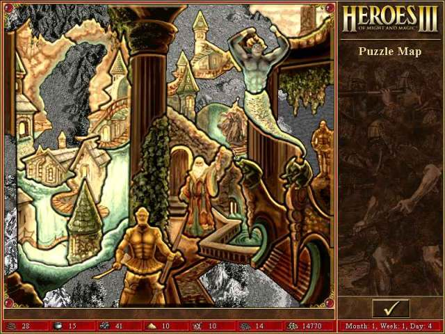
If we visit all the Obelisks, the map will be revealed completly and the place which holds the Holy Grail will be marked. We can give it a try before, if we recognize the place and dig at random for it (it's near the center).
We build the Parapet and Golem Factory in the 6th and 7th days, just in time to let them produce units when the week changes. In our exploration, Astral learns Basic Air Magic, which will give us more power to strike... with the lightning! Because of this, all units are transfered to him.
In the day of our Lord, Day 1, Week 2, we upgrade the Workshop, to get Master Gremlins in exchange. This is one of the
reasons I chose the Tower city : Master Gremlins are able to shoot, there's no need to get near an enemy unit to hit.
We could have waited another day to build Mage Tower and buy Magi, which are also able to shoot, but time is precious.
They'll have to wait for our victoriuos return from the first battles.
There's an Alchemist's Lab nearby, guarded by Gremlins. Let's flag it! Attack the Gremlins!
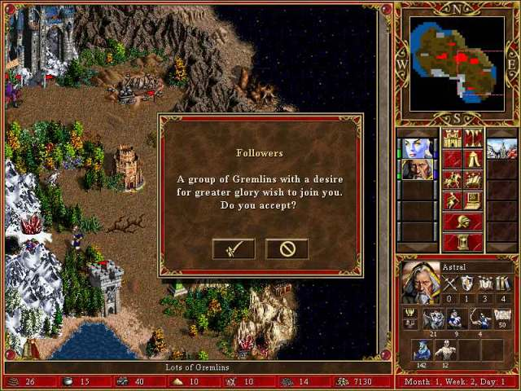
But what a pleasant surprise : the Gremlins have a desire for greater glory and wish to join you. Sure we accept, and head for the Crystal Cavern after flaging the Alchemist's Lab. Meanwhile Aine is collecting armies from the two forts we discovered, and improvements at the City continue.
Let's attack the Griffins which guard the Crystal Cavern. Resistance is futile...
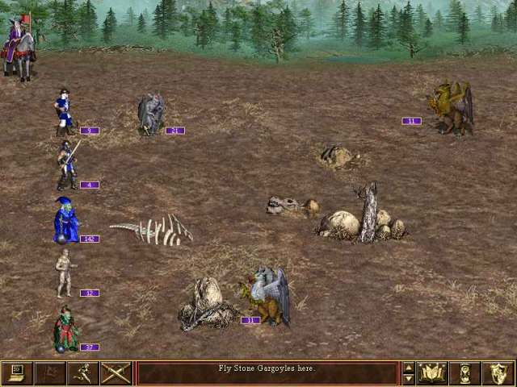
The battle is easy. We use the Lighting spell to make some damage whenever we can, and Master Gremlins do a great
job. The Wait button is very important. As it says, we can make a unit pause and wait for a better time to act. We usually
will wait the first turn, letting the enemy use his moves to came closer,
then we use ours to hit <evil grin>.
After the Griffins perish, we are rewarded with 550 points of experience, the Crystal Cavern and some treasures
near it.
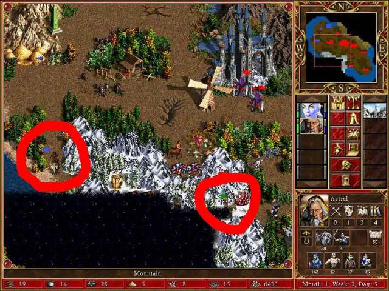
On the way home, we realise there's a party at the City. What makes us think that ? Well, blue and green players want to join it! There's not much we can do; prepare the party at the Castle. Yes, we do have a Castle now, which gives us two tower with Magi, which shoot every turn.
We are attacked in the castle fortunatelly (Aine was moved as far as possible from the two enemies).
Near the Castle's wall, there are also mines; isn't the Tower city great ?
The Rocs move into to castle; they come near the wall... in a mine. But luck enables them to move
again and they hit. Gargoyles fly near a mine, atracting the other enemy units.
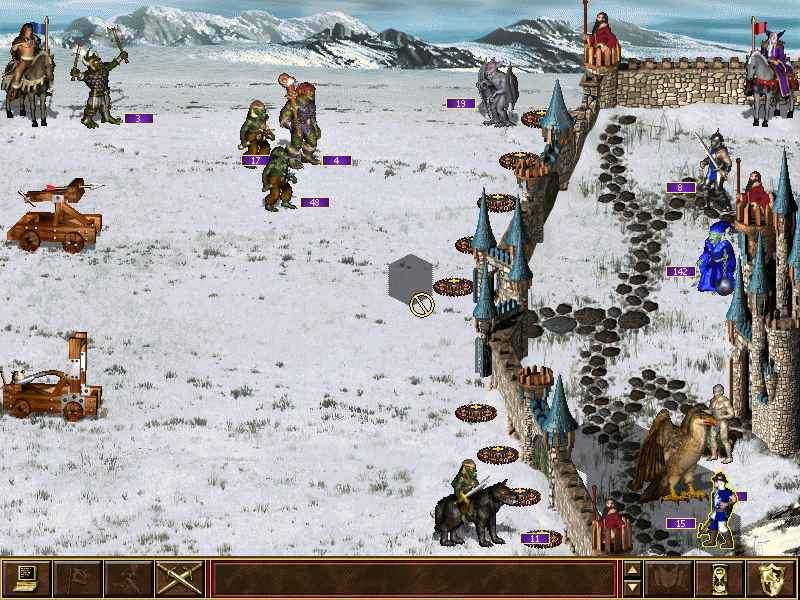
The Wolfes want to approach them, but die after stepping into two mines. The other enemy units being being in front of them, with no mines between, Gargoyles step back behind the wall which resits to the enemy catapult.
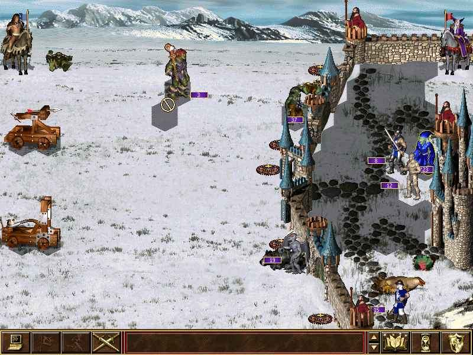
We continue like this... Gargoyles fly near mines, towers shot what they please (you can't control them), Master Gremlins shot what we want, and Lighting strikes from time to time (I mean, from turn to turn :-)
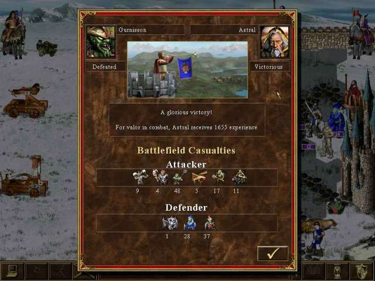
Victory, and deserved experience points enable Astral to learn Basic Path Finding, meaning more moves. Not to mention we capture two enemy artifacts... Let the party continue!
And it does... The Green player thinks he can do better, and strikes with the same type of army, a little bigger.
The same tragic ending... for him. Even worse, the Green player has been vanisqued, his city being taken by another
player; he got a week to capture a city. Well, at least she tried (it was a woman hero).
We couldn't have resisted without the Tower (mines, Gremlins and flying Gargoyles).
A period of peace and prosperity comes. Other mines are flagged, artifacts found, neutral creatures destroyed. (even if they considered us too powerful and wished to leave without fight, we fought them to gain experience).
This period ends fast and bad : Aine is caught by the Tan player, camed out by surprise of an unxplored region of the map. He wasn't powerful, but Aine had only one Gremlin with her. Of course, Astral revenged her one turn later. Unfortunatelly, the enemy fled (retreated) when he was having only a few units left. I hate when this happens. If the hero had any artifacts, they left with him. Remember we can recruit heroes from the Tavern; seldom heroes who had abandoned players can be found, with experience and artifacts.
Time has passed... Blue player didn't stop visiting us until he has been vanisqued. More victoriuous battles...
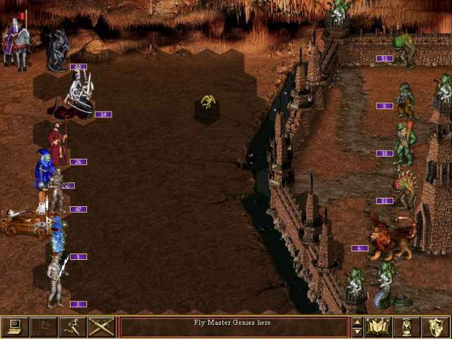
Everything necesary has been built in the City, even the Holy Grail which was found after a few tries. The Holy Grail provides a lot of advantages, including 5000 gold / day and 15 Knowledge points per hero.
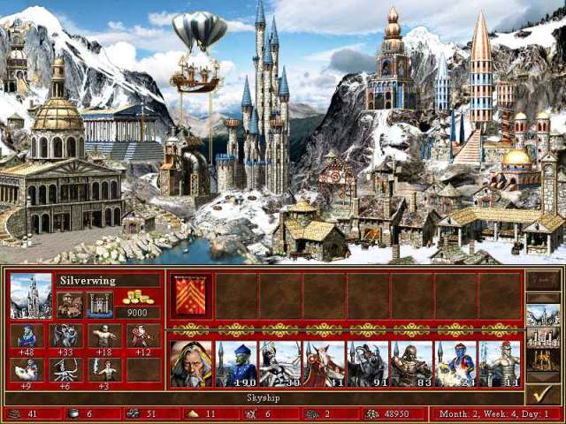
In the final battle, the enemy didn't had any chance. The castle's towers took out some Gremlins, but that was all.
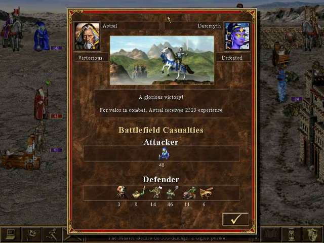
Here ends our glorious adventure. The real fun is when you are playing against humans. You can do that with a TCP/IP network, or on the same computer, being a turn-based game. The ideal game to play at work with other 5 colleagues :-) (you a take a 5 minute break every half an hour to move your heroes). Just make sure that the $29.95 bill from Loki games doesn't appear on the company credit card :-) ( you can also download a demo on the game home page )
Happy adventuring!
If you enjoyed this article, feel free to donate me other strategy games, such as Civilization - Call to Power, so I'd be able to write more...